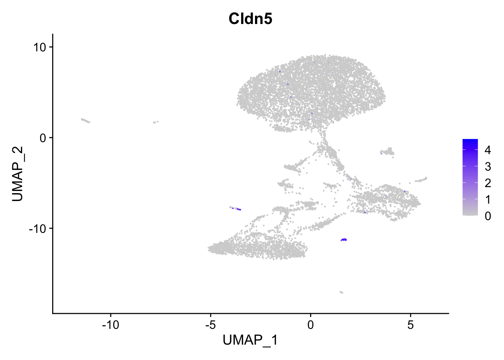
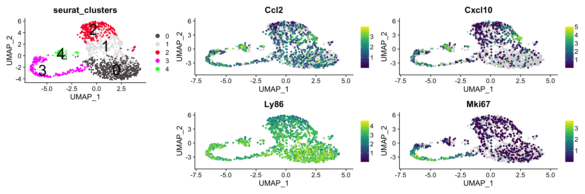

Code
knitr::opts_chunk$set(message = FALSE)
knitr::opts_chunk$set(warning = FALSE)
knitr::opts_chunk$set(error = FALSE)knitr::opts_chunk$set(message = FALSE)
knitr::opts_chunk$set(warning = FALSE)
knitr::opts_chunk$set(error = FALSE)#general packages
library(tidyverse)
library(PCAtools)
#single cell packages
library(SeuratDisk)
library(Seurat)
library(scDblFinder)
library(scater)
#graphics packages
library(patchwork)
library(scCustomize)
library(facefuns)
library(viridis)
library(Polychrome)#function to provide negated set operation
`%!in%` = Negate(`%in%`)
#function to calculate relative abundance of individual clusters to a sample
pTable = function(seurat_object,cluster_column,split_by_){
x = data.frame(
t(
t(
table(
seurat_object@meta.data[[cluster_column]],
seurat_object@meta.data[[split_by_]]
)
)
/
colSums(
table(
seurat_object@meta.data[[cluster_column]],
seurat_object@meta.data[[split_by_]]
)
)
*100
)
)
#to programmatically rename columns using dplyr evaluate variable content with !! and use special operator :=
x = dplyr::rename(x,
!!cluster_column := Var1,
!!split_by_ := Var2)
y = data.frame(
#the levels of the cluster_column e.g. celltypes are the output lavels
unique(x[[cluster_column]]),
#calculating the log2 of the ratio of frequencies in each of the split_by_ entities is the log2FC
#with .data[[var_name]] one can programmatically access the columns
x %>% summarise(log2(
Freq[.data[[split_by_]] ==
levels(
as.factor(
x[[split_by_]]))[1]]
/
Freq[.data[[split_by_]] ==
levels(
as.factor(
x[[split_by_]]))[2]])))
names(y) = c(cluster_column,'log2FC')
return(list('freq' = x,
'log2fc' = y))
}wd = getwd()
indir = paste0(wd,'/scRNAdata/IC/')
dir.create(indir,recursive = TRUE)
outdir = paste0(wd,'/Output/IC/')
dir.create(outdir,recursive = TRUE)
figdir = paste0(wd,'/figures/IC/')
dir.create(figdir,recursive = TRUE)Reading in raw count matrices output by CellRanger, annotating meta data, merging both hMBP and WT counts into one object. Barcodes with less than 100 reads are discarded as empty droplets.
#tag
filenameWT = paste0(indir,'GSM6914114_MQ_hMBP_EAE_IC_pre_m.h5')
filenameHMBP = paste0(indir,'GSM6914113_MQ_WT_EAE_IC_pre_m.h5')
#Reading in Raw 10X count files
rawWT = Read10X_h5(filenameWT, use.names = TRUE, unique.features = TRUE)
rawHMBP = Read10X_h5(filenameHMBP, use.names = TRUE, unique.features = TRUE)
#Creating Seurat Objects
sc.taggedWT = CreateSeuratObject(counts = rawWT, min.cells = 0, min.genes = 200, project = 'EAE_IC_WT')
sc.taggedWT$genotype = 'WT'
sc.taggedHMBP = CreateSeuratObject(counts = rawHMBP, min.cells = 0, min.genes = 200, project = 'EAE_IC_HMBP')
sc.taggedHMBP$genotype = 'hMBP'
#Merging objects
sc.tagged = merge(sc.taggedWT,sc.taggedHMBP)
#filtering empty droplets
sc.tagged = sc.tagged %>% subset(nCount_RNA > 100)
#factoring sample metadata
sc.tagged$sample = factor(sc.tagged$orig.ident,levels = c('EAE_IC_WT','EAE_IC_HMBP'))
sc.tagged$genotype = factor(sc.tagged$genotype, levels = c('WT','hMBP'))
#calculating mitochondrial genes
sc.tagged$mitoRatio <- PercentageFeatureSet(object = sc.tagged, features = rownames(sc.tagged)[grep('^mt',x =rownames(sc.tagged))]
) / 100
SaveH5Seurat(sc.tagged,paste0(outdir,'IC.tagged.h5seurat'),overwrite = TRUE)cutoff.reads = 1000
cutoff.features = 500
cutoff.mitoRatio = 0.05Plotting densities of counts/cell by sample. The line represents the applied cutoff.
#tag
qc.counts.density = sc.tagged@meta.data %>%
ggplot(aes(color=sample, x=nCount_RNA, fill= sample)) +
geom_density(alpha = 0.2) +
scale_x_log10() +
ylab("Cell density") +
geom_vline(xintercept = cutoff.reads) +
theme(legend.position = 'none')
qc.counts.violin = sc.tagged@meta.data %>%
ggplot(aes(x=sample, y=nCount_RNA, fill= sample, color = sample)) +
geom_violin(scale = 'width', alpha = 0.2) +
geom_jitter(size = 0.1, alpha = 0.5, color = 'black') +
scale_fill_discrete() +
scale_y_log10() +
geom_boxplot(width=0.2, outlier.size = 0, fill = 'white', color = 'black', coef = 0, outlier.color = NA) +
geom_hline(yintercept = cutoff.reads) +
ylab('Read counts') +
xlab('') +
theme(legend.position = 'right')
qc.counts.density + qc.counts.violin +
plot_annotation(
tag_levels = 'A') Plotting the density of detected genes/cell by sample. The line represents the applied cutoff.
#tag
qc.features.density = sc.tagged@meta.data %>%
ggplot(aes(color=sample, x=nFeature_RNA, fill= sample)) +
geom_density(alpha = 0.2) +
scale_x_log10() +
ylab("Cell density") +
geom_vline(xintercept = cutoff.features) +
theme(legend.position = 'none')
qc.features.violin = sc.tagged@meta.data %>%
ggplot(aes(x=sample, y=nFeature_RNA, fill= sample, color = sample)) +
geom_violin(scale = 'width', alpha = 0.2) +
geom_jitter(size = 0.1, alpha = 0.5, color = 'black') +
scale_fill_discrete() +
scale_y_log10() +
geom_boxplot(width=0.2, outlier.size = 0, fill = 'white', color = 'black', coef = 0, outlier.color = NA) +
geom_hline(yintercept = cutoff.features) +
ylab('Feature counts') +
xlab('') +
theme(legend.position = 'right')
qc.features.density + qc.features.violin +
plot_annotation(
tag_levels = 'A') #tag
qc.mitoRatio.density = sc.tagged@meta.data %>%
ggplot(aes(color=sample, x=mitoRatio, fill= sample)) +
geom_density(alpha = 0.2) +
scale_x_log10() +
ylab("Cell density") +
geom_vline(xintercept = cutoff.mitoRatio) +
theme(legend.position = 'none')
qc.mitoRatio.violin = sc.tagged@meta.data %>%
ggplot(aes(x=sample, y=mitoRatio, fill= sample, color = sample)) +
geom_violin(scale = 'width', alpha = 0.2) +
geom_jitter(size = 0.1, alpha = 0.5, color = 'black') +
scale_fill_discrete() +
scale_y_log10() +
geom_boxplot(width=0.2, outlier.size = 0, fill = 'white', color = 'black', coef = 0, outlier.color = NA) +
geom_hline(yintercept = cutoff.mitoRatio) +
ylab('Feature counts') +
xlab('') +
theme(legend.position = 'right')
qc.mitoRatio.density + qc.mitoRatio.violin +
plot_annotation(
tag_levels = 'A') Summary plotting read counts vs. number of genes, colored by ratio of mitochondrial genes.
#tag
# Visualize the correlation between genes detected and number of UMIs and determine whether strong presence of cells with low numbers of genes/UMIs
qc.combined = sc.tagged@meta.data %>%
ggplot(aes(x=nCount_RNA, y=nFeature_RNA)) +
geom_jitter(aes(color=mitoRatio), size = 1) +
scale_colour_gradient(low = "gray90", high = "black", limits = c(0,cutoff.mitoRatio),na.value = 'red') +
stat_smooth(method=lm) +
scale_x_log10() +
scale_y_log10() +
theme_classic() +
geom_vline(xintercept = cutoff.reads) +
geom_hline(yintercept = cutoff.features) +
facet_wrap(~sample)
qc.combined + plot_annotation(tag_levels = 'A') Filtering for high-quality cells is done according to cutoffs stated above.
#tag
sc.filt = sc.tagged %>%
subset(nFeature_RNA > cutoff.features) %>%
subset(nCount_RNA > cutoff.reads) %>%
subset(mitoRatio < cutoff.mitoRatio) Count data is scaled to 10.000 counts/cell and log2p normalized.
#tag
sc.norm = sc.filt %>%
NormalizeData(normalization.method = "LogNormalize", scale.factor = 1e4) %>%
ScaleData()2000 most variable genes are selected for downstream analysis.
#tag
sc.norm = FindVariableFeatures(sc.norm)
VariableFeaturePlot_scCustom(sc.norm,label = TRUE) Data is normalized and PCA calculated for 2000 most variable genes. Elbow plot shows %-variance explained by each PC. There is no clear shoulder. 30 PCs will be used for downstream analysis.
#tag
sc.norm = RunPCA(sc.norm)
ElbowPlot(sc.norm,ndims = 50)For visualization, UMAP is calculated using the first 30 PCs and default parameters (n.neighbors = 30, min.dist = 0.3, seed.use = 42, etc.). Plotted below colored by sample.
#tag
sc.norm = sc.norm %>% RunUMAP(dims = 1:30,n.neighbors = 30,min.dist = 0.3, seed.use = 42)
DimPlot(sc.norm,group.by = 'sample', split.by = 'sample')&NoAxes()Nearest-neighbor and shared nearest neighbor graphs are constructed using the first 30 dimensions of PCA and standard parameters (k=20, nn.method = annoy, annoy.metric = euclidean, prune.SNN = 1/15, n.trees = 50,) Cells are clustered by modularity optimization on the Louvain algorithm (Waltman and van Eck (2013). Standard parameters are used (resolution = 0.8).
#tag
sc.norm = sc.norm %>% FindNeighbors(dims = 1:30,k=20, nn.method = 'annoy', annoy.metric = 'euclidean', prune.SNN = 1/15, n.trees = 50)
sc.norm = sc.norm %>% FindClusters(algorithm = 1)Modularity Optimizer version 1.3.0 by Ludo Waltman and Nees Jan van Eck
Number of nodes: 10710
Number of edges: 364263
Running Louvain algorithm...
Maximum modularity in 10 random starts: 0.8374
Number of communities: 20
Elapsed time: 1 secondsDimPlot_scCustom(sc.norm)&NoAxes()In order to assign cell types two approaches are used jointly: (1) Plotting of canonical immune cells markers (2) Calculating marker genes of individual clusters and manual search in databases with cell type annotations (proteinatlas.org, genecards.org)
Plotting Ptprc (CD45) expression shows low background from CD45- cells. Clusters 16 and 17 look like contamination.
#tag
clPlot = DimPlot_scCustom(sc.norm)&NoAxes()
#Ptprc: CD45+, the cells that don't express are background
FeaturePlot(sc.norm, features = c('Ptprc')) + clPlot + plot_layout(ncol = 2)Plotting Cd14,C1qa,Aif1 (IBA1), Trem2 shows as signal both in macrophages and microglia
#tag
wrap_plots(FeaturePlot(sc.norm, features = c('Cd14','C1qa','Aif1','Trem2'))&NoAxes())+clPlotPlotting P2ry12 and Tmem 119 as markers for Microglia. Both are fairly specific to Clusters 4,5,9. C1qa and Cx3cr also have higher expression in these clusters.
#tag
wrap_plots(FeaturePlot(sc.norm, features = c('P2ry12','Tmem119','C1qa','Cx3cr1'))&NoAxes())+clPlotPlotting Fcgr1 (CD64), Ccr2, Cxcr4 as markers for macrophages. They are all strongest in Clusters 0,1,2,3,13
#tag
#macrophages: Fcgr1: CD64, Cx3cr1
wrap_plots(FeaturePlot(sc.norm, features = c('Fcgr1','Ccr2','Cxcr4'))&NoAxes())+clPlotPlotting Cd3g, Cd3d (CD3) and Trbc1, Trbc2 (TCR) shows that clusters 7,6,12 are T-Cells. (1) Cd4 (CD4) and Cd8a (CD8) are often not well detected in scRNAseq data but can see both populations present (2) NK cells are defined by absence of CD3 and e.g. Klrk1 (CD314), Klrb1 (CD161), Ncr1 (NKp46) we can see a population that is CD3-,CD314+,NKp46+ in one of the T-cell clusters
#tag
#T Cells Cd3g/Cd3d: CD3
wrap_plots(FeaturePlot(sc.norm, features = c('Cd3g','Cd3d','Trbc1', 'Trbc2'))&NoAxes())+clPlot Plotting Cd19 (CD19), Ms4a1 (CD20), Cd79a+Cd79b (CD79) shows B-cells in Cluster 18. Looks like a very small percentage, there might be some selection bias.
#tag
wrap_plots(FeaturePlot(sc.norm, features = c('Cd19','Ms4a1','Cd79a','Cd79b'))&NoAxes())+clPlotPlotting Itgax (CD11c), H2-Aa, H2-ab1, H2-D1 (MHCII) as markers for conventional dendritic cells (DC). Both are not very specific, strongest in Cluster 10. Additionally, Xcr1 and Clec9a (CD370) are supposed to be markers for DC presenting to CD8+ T-cells which are also concentrated in Cluster 10.
#tag
wrap_plots(FeaturePlot(sc.norm, features = c('Itgax','H2-Aa','Xcr1','Clec9a'))&NoAxes())+clPlotPlotting Siglech (Siglec-H), which also marks Microglia and Bst2 (CD317) as Markers of Plasmacytoid DCs. Both are strongest in Cluster 14.
#tag
wrap_plots(FeaturePlot(sc.norm, features = c('Siglech','Bst2'),ncol = 1) & NoAxes()) + clPlotExpression of Ngp (Neutrophilic granule protein), S100a8 and Retnlg identfy Cluster 15 as granulocytes > these are neutrophils that are important for EAE additional markers: Cxcr2: main chemokine receptor for neutrophils, Ly6g
#tag
wrap_plots(FeaturePlot(sc.norm, features = c('S100a8','Ngp','Retnlg'))&NoAxes()&NoAxes())+clPlotClusters 16, 11 and 17 still remain unclear. Checking by calculating unqiue clustermarkers:
#tag
FindMarkers(sc.norm, group.by = 'seurat_clusters',ident.1 = 17, logfc.threshold = 2, min.diff.pct = 0.7, only.pos = TRUE) p_val avg_log2FC pct.1 pct.2 p_val_adj
Tm4sf1 0.000000e+00 2.805910 0.707 0.002 0.000000e+00
Id3 0.000000e+00 2.596465 0.747 0.016 0.000000e+00
Sparcl1 0.000000e+00 3.010900 0.813 0.003 0.000000e+00
Ptn 0.000000e+00 3.544829 0.787 0.008 0.000000e+00
Nedd4 0.000000e+00 2.546426 0.773 0.014 0.000000e+00
Igfbp7 5.368829e-211 4.577987 0.813 0.047 1.667183e-206
Tsc22d1 6.104530e-184 2.607984 0.813 0.052 1.895640e-179
Sparc 1.052539e-68 2.639328 0.987 0.220 3.268449e-64Cluster 17 seems to be oligendrocytes (Mag, Klk6, Ptgds)
#tag
FindMarkers(sc.norm, group.by = 'seurat_clusters',ident.1 = 16, logfc.threshold = 2, min.diff.pct = 0.7, only.pos = TRUE) p_val avg_log2FC pct.1 pct.2 p_val_adj
S100a9 0.000000e+00 8.055196 0.901 0.013 0.00000e+00
S100a8 9.247286e-81 7.028866 0.938 0.228 2.87156e-76sc.norm %>% FeaturePlot('Cldn5')
Tm4sf1 points to endothelial cells for cluster 16, which can be confirmed by looking at Cldn5
One cluster remains unannotated. By calculating marker genes we find Fscn1 and Ccr7 among the top markers which are annotated in literature as highly specific markers for activation of dendritic cells.
#tag
sc.norm %>% FindMarkers(ident.1 = '11',logfc.threshold = 0.5, only.pos = TRUE,min.diff.pct = 0.7) p_val avg_log2FC pct.1 pct.2 p_val_adj
Fscn1 0.000000e+00 4.467155 0.905 0.058 0.000000e+00
Ramp3 0.000000e+00 2.848859 0.709 0.008 0.000000e+00
Ccr7 0.000000e+00 4.102384 0.921 0.007 0.000000e+00
Serpinb6b 0.000000e+00 3.729916 0.852 0.034 0.000000e+00
Traf1 1.047943e-240 2.608671 0.820 0.100 3.254177e-236
Cytip 6.252751e-192 2.987493 0.931 0.183 1.941667e-187
Tmem123 4.074869e-170 3.310465 0.942 0.241 1.265369e-165#tag
#assigning original cell type labels based on old seurat clusters
sc.norm$clusters = sc.norm$seurat_clusters
Idents(sc.norm) = sc.norm$clusters
sc.norm = RenameIdents(sc.norm,
'0' = 'Monocytes/Macrophages',
'1' = 'Monocytes/Macrophages',
'2' = 'Monocytes/Macrophages',
'3' = 'Monocytes/Macrophages',
'13' = 'Monocytes/Macrophages',
'4' = 'Microglia',
'5' = 'Microglia',
'9' = 'Microglia',
'6' = 'T-Cells',
'7' = 'T-Cells',
'12' = 'T-Cells',
'8' = 'Cycling cells',
'10' = 'Conventional DC',
'11' = 'Activated DC',
'14' = 'Plasmacytoid DC',
'15' = 'Granulocytes',
'16' = 'Endothelial cells',
'17' = 'Glia cells',
'18' = 'B-Cells')
sc.norm$celltypes = Idents(sc.norm)Cell cycle phase scoring (using an enrichment approach adapted from Tirosh et al. 2016) shows actively dividing cells only in Cluster 8 which is recapitulated by expression of canonical markers for proliferating cells Top2a and Mki67.This cluster shows markers for both T-cells and microglia so we have to regress out cell cycle phase to put each cell type in their corresponding clusters.
cell_cycle_genes = read.csv('Mus_musculus_CC.csv')
# Download the appropriate Ensembldb database
annotations = read.csv('geneInfoEns105.csv')
# Get gene names for Ensembl IDs for each gene
cell_cycle_markers = left_join(cell_cycle_genes, annotations, by = c("geneID" = "gene_id"))
# Acquire the S phase genes
s_genes = cell_cycle_markers %>%
dplyr::filter(phase == "S") %>%
pull("gene_name")
# Acquire the G2M phase genes
g2m_genes = cell_cycle_markers %>%
dplyr::filter(phase == "G2/M") %>%
pull("gene_name")
# Perform cell cycle scoring
sc.norm = CellCycleScoring(sc.norm,
g2m.features = g2m_genes,
s.features = s_genes)
# Visualize the UMAP, grouping by cell cycle phase
wrap_plots(DimPlot(sc.norm,group.by= "Phase", split.by = 'Phase',ncol = 1)&NoAxes()) + wrap_plots( FeaturePlot(sc.norm,features = c('Top2a','Mki67'), ncol = 1)&NoAxes()) scCC <- ScaleData(sc.norm, vars.to.regress = c("S.Score", "G2M.Score"), features = rownames(sc.norm))
scCC = scCC %>%
RunPCA %>%
RunUMAP(dims = 1:30,n.neighbors = 30,min.dist = 0.3, seed.use = 42)
SaveH5Seurat(scCC,paste0(outdir,'scCC.h5seurat',overwrite = TRUE))Now cycling cells are closer to the microglia and t-cell clusters
#tag
#Here we can see that 'cycling cells' cluster is now split mostly between Microglia and T-Cells
scCC %>% DimPlot_scCustom(label=TRUE,group.by = 'celltypes') +
scCC %>% FeaturePlot(c('Top2a','Mki67'))## Doublet & contamination removal
In order to improve the clustering we will also remove doublet cells using scDoubletFinder and filter out any clusters that are not immune cells. As scDoubletFinder relies on randomization, the clustering results downstream of that will not be 100% reproducible via this notebook. Total number of clusters and assignment of cells to (unsupervised) clusters will vary slightly. Therefore we provide the code we used and will then load a list containing the filtered cell barcodes as they were output when we ran the function at the end of the snippet in order to generate exactly the same figures as presented in the paper.
#tag
sce = as.SingleCellExperiment(scCC)
sce.dbl = scDblFinder(sce)
(plotUMAP(sce,colour_by = 'celltypes') +
plotUMAP(sce.dbl,colour_by = 'scDblFinder.score')) /
(plotUMAP(sce.dbl,colour_by = 'nCount_RNA') +
plotUMAP(sce.dbl,colour_by = 'nFeature_RNA')) #tag
#scdblfinder also predicts which cells are singlets absolutly
plotUMAP(sce.dbl,colour_by = 'scDblFinder.class')#and we can use this information to subset the seurat object
sce.noDbl = sce.dbl[,sce.dbl$scDblFinder.class == 'singlet']
scCC.noDbl = scCC[,sce.dbl$scDblFinder.class == 'singlet']
#after throwing out doublets recompute dimensional reductions and clustering
scCC.noDblRE = scCC.noDbl %>%
RunPCA %>%
RunUMAP(dims = 1:30,n.neighbors = 30,min.dist = 0.3, seed.use = 42) %>%
FindNeighbors(dims = 1:30) %>%
FindClusters(resolution = 1.1) %>%
BuildClusterTree()Modularity Optimizer version 1.3.0 by Ludo Waltman and Nees Jan van Eck
Number of nodes: 9095
Number of edges: 309425
Running Louvain algorithm...
Maximum modularity in 10 random starts: 0.7922
Number of communities: 21
Elapsed time: 1 seconds#tag
scCC.noDblRE.clean = scCC.noDblRE[,scCC.noDblRE$seurat_clusters %!in% c(19,20)]
#scCC.noDblRE.clean %>% colnames %>%
# as.data.frame() %>%
# write_csv(file = 'scCC.noDblRE.clean_barcodes.csv')
filtered_bc = read_csv(file = 'scCC.noDblRE.clean_barcodes.csv')$.
scCC.noDblRE.clean = scCC[,filtered_bc]
scCC.noDblRE.clean = scCC.noDblRE.clean %>%
RunPCA %>%
RunUMAP(dims = 1:30,n.neighbors = 30,min.dist = 0.3, seed.use = 42) %>%
FindNeighbors(dims = 1:30) %>%
FindClusters(resolution = 0.8) %>%
BuildClusterTree() Modularity Optimizer version 1.3.0 by Ludo Waltman and Nees Jan van Eck
Number of nodes: 8954
Number of edges: 307147
Running Louvain algorithm...
Maximum modularity in 10 random starts: 0.8154
Number of communities: 16
Elapsed time: 1 secondsscCC.noDblRE.clean %>% subset(celltypes %!in% levels(scCC.noDblRE.clean$celltypes)[9])An object of class Seurat
31053 features across 8953 samples within 1 assay
Active assay: RNA (31053 features, 2000 variable features)
2 dimensional reductions calculated: pca, umapscCC.noDblRE.clean %>% DimPlot_scCustom(label = TRUE) + scCC.noDblRE.clean %>% DimPlot_scCustom(group.by = 'celltypes', label = TRUE)Now we assign final cell type labels.
#tag
scCC.noDblRE.clean$clusters = scCC.noDblRE.clean$seurat_clusters
Idents(scCC.noDblRE.clean) = scCC.noDblRE.clean$clusters
scCC.noDblRE.clean = RenameIdents(scCC.noDblRE.clean,
'0' = 'Macrophages',
'1' = 'Macrophages',
'2' = 'Macrophages',
'3' = 'Macrophages',
'4' = 'Microglia',
'5' = 'Microglia',
'12' = 'Microglia',
'14' = 'Microglia',
'6' = 'T-Cells',
'8' = 'T-Cells',
'11' = 'T-Cells',
'7' = 'Conventional DC',
'9' = 'Activated DC',
'10' = 'Plasmacytoid DC',
'13' = 'Granulocytes',
'15' = 'B-Cells')
scCC.noDblRE.clean$celltypesNew = Idents(scCC.noDblRE.clean)
scCC.noDblRE.clean %>% DimPlot_scCustom(group.by = 'celltypesNew',label = TRUE) #tag
SaveH5Seurat(scCC.noDblRE.clean, file = paste0(outdir,'/MQ_EAE_processed.h5seurat'),overwrite = TRUE) sc.IC = LoadH5Seurat(file = paste0(indir,'GSE222063_MQ_EAE_processed.h5seurat'))
sc.mg = sc.IC %>% subset(celltypesNew == 'Microglia')
sc.mac = sc.IC %>% subset(celltypesNew == 'Macrophages')sc.split = SplitObject(sc.mac,split.by = 'sample')
# normalize and identify variable features for each dataset independently
sc.split <- lapply(sc.split,function(x) {
x <- NormalizeData(x)
x <- FindVariableFeatures(x, selection.method = "vst", nfeatures = 2000)
})
# select features that are repeatedly variable across datasets for integration
features <- SelectIntegrationFeatures(sc.split)
# find features for integration
mac.anchors <- FindIntegrationAnchors(sc.split, anchor.features = features)
# create integrated assay
mac.combined <- IntegrateData(anchorset = mac.anchors)
# reanalyse integrated data
DefaultAssay(mac.combined) = 'integrated'
mac.combined = mac.combined %>% ScaleData() %>%
RunPCA(npcs = 30) %>%
RunUMAP(dims = 1:15) %>%
FindNeighbors(dims = 1:15) %>%
FindClusters(resolution = 0.5)Modularity Optimizer version 1.3.0 by Ludo Waltman and Nees Jan van Eck
Number of nodes: 6102
Number of edges: 202931
Running Louvain algorithm...
Maximum modularity in 10 random starts: 0.7706
Number of communities: 6
Elapsed time: 0 secondsgenes_celltypes = list(
genes_b = c('Cd19','Ms4a1'),
genes_gran = c('S100a8','Retnlg'),
genes_pdc = c('Siglech','Bst2'),
genes_cdcAct = c('Fscn1','Ccr7'),
genes_cdc = c('Itgax','Btla'),
genes_t = c('Cd3g','Trbc1'),
genes_mg = c('Tmem119','Cx3cr1'),
gene_mac = c('Arg1','Cd68')
)
mac.combined %>% DimPlot_scCustom(label = TRUE) / wrap_plots(
lapply(genes_celltypes,function(x){
FeaturePlot_scCustom(mac.combined,x,colors_use = viridis_light_high) +
theme(legend.position = 'right',
legend.box = 'horizontal',
legend.title = element_text(size = 4))
})) Based on marker genes for the individual cell types identified in our dataset no single cluster seems to contain a contamination.
Cell states were analyzed based on discussion and marker gene expression reported in Giladi et al. 2021. Here they state, that Ly6c+ monocytes (human: CD14hi-CD16lo) carry chemokine receptors that allow tissue infiltration and subsequent generation of different monocyte-derived cells. After infiltration they gain expression of MHCII-related genes. Monocytes expressing Ccr2 were identified as main drivers of EAE pathogenesis.
In their single-cell analysis they could identify a more fine-grained classification of different cell states:
genes_mac = list(
genes_general = c('Ly6c2', 'Ccr2','H2-Ab1','H2-D1','H2-Eb1','Top2a','Mki67'),
genes_arg1 = c('Arg1','Ecm1','Tmem37','Apoc2','C1qb','Itgb5','Itga6','Anxa3','Ptgs1','C3ar1'),
genes_arg2 = c('Cd14','Arg1','Thbs1','Mmp19','Klf2','Ecm1','Lmna'),
genes_nos2 = c('Gpnmb','Fabp5','Nos2','Slc7a2','Slc7a11','Fth1','Cstb'),
genes_ifit1 = c('Ifit1','Ifit2','Ifit3', 'Usp18','Irf7'),
genes_saa3 = c('Saa3','Saal1','Tgm2','Gbp2','Upp1','Plac8','Clec5a'),
genes_cxcl10 = c('Cxcl10','Cxcl9','Cxcl11','Socs1','Gbp2','Tgm2','Nod1','Upp1','Il1b','Smox'))
mac_states_plots = lapply(genes_mac,function(x){
wrap_plots(design = 'ABBB
#BBB',
DimPlot_scCustom(seurat_object = mac.combined,
group.by = 'seurat_clusters',
label = TRUE,
label.size = 10),
FeaturePlot_scCustom(seurat_object = mac.combined,
features = x,
colors_use = viridis_light_high,) &
theme(legend.position = 'right',
legend.box = 'horizontal',
legend.title = element_text(size = 4)))})While there is no perfect match of the markers, we can still see a good correspondance our subclustering and the respective substate markers described by Giladi et al. It seems not to be possible to retrieve the the two individual Arg1 populations. according to these markers, our clusters correspond to: - 0: Arg1+ - 1: Arg1+ - 2: Nos2+ - 3: Cxcl10+ - 4: Saa3+ (by the markers other than Saa3) - 5: Ifi2+
mac.combined$clusters = mac.combined$seurat_clusters
Idents(mac.combined) = mac.combined$clusters
mac.combined = RenameIdents(mac.combined,
'0' = 'Arg1+',
'1' = 'Arg1+',
'2' = 'Nos2+',
'3' = 'Cxcl10+',
'4' = 'Saa3+', # (by other markers,)
'5' = 'Ifi2+')
mac.combined$macTypes = Idents(mac.combined)
SaveH5Seurat(mac.combined,filename = paste0(outdir,'mac.combined.h5seurat'),overwrite = TRUE)sc.split = SplitObject(sc.mg,split.by = 'sample')
# normalize and identify variable features for each dataset independently
sc.split <- lapply(sc.split,function(x) {
x <- NormalizeData(x)
x <- FindVariableFeatures(x, selection.method = "vst", nfeatures = 2000)
})
# select features that are repeatedly variable across datasets for integration
features <- SelectIntegrationFeatures(sc.split)
mg.anchors <- FindIntegrationAnchors(sc.split, anchor.features = features)
# this command creates an 'integrated' data assay
mg.combined <- IntegrateData(anchorset = mg.anchors)
DefaultAssay(mg.combined) = 'integrated'
mg.combined = mg.combined %>% ScaleData() %>%
RunPCA(npcs = 30) %>%
RunUMAP(dims = 1:15) %>%
FindNeighbors(dims = 1:15) %>%
FindClusters(resolution = 0.5)Modularity Optimizer version 1.3.0 by Ludo Waltman and Nees Jan van Eck
Number of nodes: 1446
Number of edges: 55041
Running Louvain algorithm...
Maximum modularity in 10 random starts: 0.7837
Number of communities: 7
Elapsed time: 0 secondsmg.combined %>% DimPlot_scCustom(label = TRUE) / wrap_plots(
lapply(genes_celltypes,function(x){
FeaturePlot_scCustom(seurat_object = mg.combined,
features = x,
colors_use = viridis_light_high) +
theme(legend.position = 'right',
legend.box = 'horizontal',
legend.title = element_text(size = 4))
})) markers_mg = c('Bhlhe41','Gpr34', 'Hexb', 'Olfml3', 'P2ry12','P2ry13','Sall1','Serpine2','Siglech','Sparc')
mg.combined %>% DimPlot_scCustom(label = TRUE) / wrap_plots(
lapply(markers_mg,function(x){
FeaturePlot_scCustom(seurat_object = mg.combined,
features = x,
colors_use = viridis_light_high) +
theme(legend.position = 'right',
legend.box = 'horizontal',
legend.title = element_text(size = 4))
})) Cluster 6 seems to be a contamination as there are several markers from other celltypes expressed Cluster 5 seems to be a contamination as well as expression of sevarl Microglia markers is missing
mg.combined = mg.combined %>% subset(seurat_clusters %!in% c(5,6)) %>%
ScaleData() %>%
RunPCA(npcs = 30) %>%
RunUMAP(dims = 1:15) %>%
FindNeighbors(dims = 1:15) %>%
FindClusters(resolution = 0.5)Modularity Optimizer version 1.3.0 by Ludo Waltman and Nees Jan van Eck
Number of nodes: 1382
Number of edges: 54150
Running Louvain algorithm...
Maximum modularity in 10 random starts: 0.7769
Number of communities: 5
Elapsed time: 0 secondsThe following analysis of microglia subclusters is based on the findings by Jordao et al. 2019. - In their analysis all MG populations expressed Bhlhe41, Gpr34, Hexb, Olfml3, P2ry12, P2ry13, Sall1, Serpine2, Siglech, and Sparc. - But daMG clusters showed lower expression of P2ry12, Maf,Slc2a5 and higher expression of Ccl2, Cxcl10, Ly86,and Mki67,indicating a proliferative capacity of daMG alongside the production of chemokines. - From the paper by Jordao et al.:The most inflammatory disease-associated microglial subsets (daMG2, daMG3, and daMG4) strongly downregulated the core microglial genes P2ry12, Tmem119,and Selplg and up-regulated Ly86. Both P2RY12 and TMEM119 immunoreactivities were clearly down-regulated within the core of spinal cord lesions, whereas CD162 (encoded by Selplg) was only weakly reduced. By contrast, microglial MD-1 (encoded by Ly86) was strongly up-regulated in the lesions. Because of their transcriptional profile and their P2RY12loTMEM119loMD-1hi phenotype, we determined that only daMG2, daMG3, and daMG4 localized within the lesion sites.
genes_mg = list(
genes_mg = c('Bhlhe41','Gpr34', 'Hexb', 'Olfml3', 'P2ry12','P2ry13','Sall1','Serpine2','Siglech','Sparc'),
genes_daMG_Up = c('Ccl2', 'Cxcl10','Ly86','Mki67'),
genes_daMG_Down = c('P2ry12','Tmem119', 'Selplg','Maf', 'Slc2a5'),
genes_hMG = c('Gpr34','Siglech','P2ry12','Tmem119'),
genes_repMG = c('Top2a','Mki67'),
genes_daMG1 = c('Cd83','Ctsd','Cd81'),
genes_daMG2 = c('Ctsb','Apoe','B2m','Cst7','Cd74','Ly86'),
genes_daMG3 = c('Cxcl10','Tnf','Ccl4','Il1a','B2m','Ly86'),
genes_daMG4 = c('Itm2b','Ctss','Ccl5','Naaa','Ly86'))mg_states_plots = lapply(genes_mg,function(x){
wrap_plots(design = 'ABBB
#BBB',
DimPlot_scCustom(seurat_object = mg.combined,
group.by = 'seurat_clusters',
label = TRUE,
label.size = 10),
FeaturePlot_scCustom(seurat_object = mg.combined,
features = x,
colors_use = viridis_light_high,) &
theme(legend.position = 'right',
legend.box = 'horizontal',
legend.title = element_text(size = 4)))})

mg.combined$clusters = mg.combined$seurat_clusters
Idents(mg.combined) = mg.combined$clusters
mg.combined = RenameIdents(mg.combined,
'0' = 'hMG',
'1' = 'hMG/daMG',
'2' = 'daMG2',
'3' = 'replicating MG',
'4' = 'daMG3')
mg.combined$mgTypes = Idents(mg.combined)
SaveH5Seurat(mg.combined,paste0(outdir,'mg.combined.h5seurat'),overwrite = TRUE)The following blocks generate the figures as found in the paper.
#set graphical plot paramters
cols = c('#D4D4D4','#CCF9E8')
colsDots = c('black','#008000')
jWidth = 0.3
dWidth = 0.6
pSize = 0.2
pAlpha = 0.3
theme_umap = theme(axis.line = element_blank(),
axis.ticks = element_blank(),
axis.text = element_blank(),
axis.title.x = element_text(hjust = 0),
axis.title.y = element_text(hjust = 0)) sc.IC$sample = factor(sc.IC$sample, levels = c('EAE_IC_WT','EAE_IC_HMBP'))
sc.IC$celltypesNew = sc.IC$celltypesNew %>% recode(Monocytes = 'Activated DC')
#changed SingleDimPlot using trace('SingleDimPlot',edit = TRUE) with geom_point(..., stroke = 0) to get finer detail
umapCelltypes = sc.IC %>% DimPlot_scCustom(group.by = 'celltypesNew',
label = FALSE,
pt.size = 0.5) &
NoAxes() &
theme(legend.position = c(0.45,0.10),
# legend.position = 'none',
plot.title = element_blank(),
legend.text = element_text(size = 6),
legend.key.size = unit(0.6,'lines'),
plot.margin = margin(0,0,0,0)) &
guides(color = guide_legend(ncol = 2,override.aes = list(size = 2)))
umapSamples = sc.IC %>%
DimPlot(split.by = 'sample',
group.by = 'sample',
cols = colsDots,
pt.size = 0.2) &
NoAxes() &
theme(legend.position = 'none',
plot.title = element_blank(),
strip.text = element_text(size = 8))
umap = umapCelltypes + inset_element(umapSamples,top = 1,
right = 1,
left = 0.4,
bottom = 0.5)
ggsave(paste0(figdir,'umap.svg'),plot = umap,dpi = 600,width = 9.22,height = 8.2,units = 'cm')
umapVlnPlotTheme = theme(panel.background = element_blank(),
axis.line.x = element_line(),
text=element_text(size=8),
axis.text = element_text(size=8,color = 'black'))
#define datasets
sc.t = sc.IC %>% subset(celltypesNew == 'T-Cells')
sc.mac = sc.IC %>% subset(celltypesNew == 'Macrophages')
sc.mg = sc.IC %>% subset(celltypesNew == 'Microglia')
#define markers
#CD25 = Il2ra, CD69, CD71 = Tfrc,HLA-DR,Cd137 = Tnfrsf9, CD107a = Lamp1,
tActMarker = c('Il12a','Ifng','Spp1','Il17a','Cd44','Cd69','Ccl2')
mgActMarker = c('Hexb','Tmem119','P2ry12','Axl','Cybb','Cd68','H2-Aa','Cd74','Cd86','Trem2','Tyrobp','Apoe','Itgax','Lgals3')
cytokines = c('Ccl5','Ccl6','Cxcl10','Il6','Csf2','Tnf')
macActGenes = c('Ly6c2','Ccr2','Fn1','Cd44')
macHomGenes = c('Fcgr1','Ms4a7','Mertk')
macGenes = c(macHomGenes,macActGenes)#Microglia
dfMgWt = FetchData(sc.mg,vars = mgActMarker, slot = 'data',cells = colnames(sc.mg)[sc.mg$sample =='EAE_IC_WT']) %>% gather() %>% mutate(genotype = 'WT')
dfMgHmbp = FetchData(sc.mg,vars = mgActMarker, slot = 'data',cells = colnames(sc.mg)[sc.mg$sample =='EAE_IC_HMBP']) %>% gather() %>% mutate(genotype = 'hMBP')
dfMg = rbind(dfMgWt,dfMgHmbp)
mgPlot = ggplot(dfMg, aes(x = factor(key,level = mgActMarker),
y = value,
fill = factor(genotype,levels = c('WT','hMBP')))) +
geom_split_violin(scale = 'width') +
geom_jitter(position = position_jitterdodge(
jitter.width = jWidth,
dodge.width = dWidth),
size = pSize,
alpha = pAlpha,
stroke = 0,
aes(color = factor(genotype,levels = c('WT','hMBP')))) +
scale_fill_discrete(type = cols) +
scale_color_discrete(type = colsDots) +
ylim(0,7) +
theme(axis.text.x = element_text(angle = 45, hjust = 1),
legend.position = 'none',
axis.line.y = element_line(),
axis.title.y = element_text(hjust = 1)) +
xlab('Microglia activation genes') +
ylab('Log1p-normalized expression') +
VlnPlotTheme#T-Cells
dfTWt = FetchData(sc.t,vars = tActMarker, slot = 'data',cells = colnames(sc.t)[sc.t$sample =='EAE_IC_WT']) %>% gather() %>% mutate(genotype = 'WT')
dfTHmbp = FetchData(sc.t,vars = tActMarker, slot = 'data',cells = colnames(sc.t)[sc.t$sample =='EAE_IC_HMBP']) %>% gather() %>% mutate(genotype = 'hMBP')
dfT = rbind(dfTWt,dfTHmbp)
tPlot = ggplot(dfT, aes(x = factor(key,level = tActMarker), y = value,fill = factor(genotype,levels = c('WT','hMBP')))) +
geom_split_violin(scale = 'width') +
geom_jitter(position = position_jitterdodge(
jitter.width = jWidth,
dodge.width = dWidth),
size = pSize,
alpha = pAlpha,
stroke = 0,
aes(color = factor(genotype,levels = c('WT','hMBP')))) +
scale_fill_discrete('Genotype',type = cols) +
scale_color_discrete('Genotype',type = colsDots) +
ylim(0,7) +
theme(axis.text.x = element_text(angle = 45, hjust = 1),
axis.title.y = element_blank(),
axis.ticks.y = element_blank(),
axis.text.y = element_blank(),
axis.line.y.left = element_blank(),
legend.position = 'none') +
xlab('T-Cell activation genes') +
VlnPlotThemedfCkWt = FetchData(sc.IC,vars = cytokines, slot = 'data',cells = colnames(sc.IC)[sc.IC$sample =='EAE_IC_WT']) %>% gather() %>% mutate(genotype = 'WT')
dfCkHmbp = FetchData(sc.IC,vars = cytokines, slot = 'data',cells = colnames(sc.IC)[sc.IC$sample =='EAE_IC_HMBP']) %>% gather() %>% mutate(genotype = 'hMBP')
dfCk = rbind(dfCkWt,dfCkHmbp)
ckPlot = ggplot(dfCk, aes(x = factor(key,level = cytokines),
y = value,
fill = factor(genotype,levels = c('WT','hMBP')))) +
geom_split_violin(scale = 'width') +
geom_jitter(position = position_jitterdodge(
jitter.width = jWidth,
dodge.width = dWidth),
size = pSize,
alpha = pAlpha,
stroke = 0,
aes(color = factor(genotype,levels = c('WT','hMBP')))) +
scale_fill_discrete('Genotype',type = cols) +
scale_color_discrete('Genotype',type = colsDots) +
ylim(0,7) +
theme(axis.text.x = element_text(angle = 45, hjust = 1),
legend.position = 'right',
axis.line.y = element_blank(),
axis.text.y = element_blank(),
axis.title.y = element_blank(),
axis.ticks.y = element_blank()) +
xlab('Cytokines') +
ylab('Log1p-normalized expression') + #as ln(counts/counts per cell * 10e4 +1
VlnPlotThemedfMacWt = FetchData(sc.mac,vars = macGenes, slot = 'data',cells = colnames(sc.mac)[sc.mac$sample =='EAE_IC_WT']) %>% gather() %>% mutate(genotype = 'WT')
dfMacHmbp = FetchData(sc.mac,vars = macGenes, slot = 'data',cells = colnames(sc.mac)[sc.mac$sample =='EAE_IC_HMBP']) %>% gather() %>% mutate(genotype = 'hMBP')
dfMac = rbind(dfMacWt,dfMacHmbp)
macPlot = ggplot(dfMac, aes(x = factor(key,level = macGenes),
y = value,
fill = factor(genotype,levels = c('WT','hMBP')))) +
geom_split_violin(scale = 'width') +
geom_jitter(position = position_jitterdodge(
jitter.width = jWidth,
dodge.width = dWidth),
size = pSize,
alpha = pAlpha,
stroke = 0,
aes(color = factor(genotype,levels = c('WT','hMBP')))) +
scale_fill_discrete('Genotype',type = cols) +
scale_color_discrete('Genotype',type = colsDots) +
ylim(0,7) +
theme(axis.text.x = element_text(angle = 45, hjust = 1),
legend.position = 'none',
axis.line.y = element_line(),
axis.title.y = element_text(hjust = 0.85 )) +
xlab('Macrophage activation genes') +
ylab('Log1p-normalized expression') + #as ln(counts/counts per cell * 10e4 +1
VlnPlotThememgPlot %>% ggsave(paste0(figdir,'mg.svg'), plot = ., dpi = 600, width = 10, height = 4, units = 'cm')
mgPlot(macPlot + tPlot + ckPlot) %>% ggsave(paste0(figdir,'t_mac_ck.svg'),plot = .,dpi = 600,width = 18,height = 4,units = 'cm')
(macPlot + tPlot + ckPlot)themeVln = theme_classic() +
theme(
legend.position = 'none',
text = element_text(size = 8)
)
pSize = 0.3
lwd = 0.2
bpWidth = 0.1
linetype = 'dashed'
qc.counts.violin = sc.tagged@meta.data %>%
ggplot(aes(x=genotype, y=nCount_RNA, fill= genotype, color = genotype)) +
geom_violin(scale = 'width',lwd = lwd) +
geom_jitter(size = pSize, alpha = pAlpha, stroke = 0) +
scale_color_discrete('Genotpye', type = colsDots) +
scale_fill_discrete('Genotpye',type = cols) +
geom_boxplot(width = bpWidth, outlier.size = 0, coef = 0, outlier.color = NA,lwd = lwd) +
scale_y_log10() +
geom_hline(yintercept = cutoff.reads, linetype=linetype) +
ylab('Read Counts') +
xlab('') +
themeVln
qc.features.violin = sc.tagged@meta.data %>%
ggplot(aes(x=genotype, y=nFeature_RNA, fill= genotype, color = genotype)) +
geom_violin(scale = 'width',lwd = lwd) +
geom_jitter(size = pSize, alpha = pAlpha, stroke = 0) +
scale_color_discrete('Genotype', type = colsDots) +
scale_fill_discrete('Genotype',type = cols) +
geom_boxplot(width = bpWidth, outlier.size = 0, coef = 0, outlier.color = NA,lwd = lwd) +
scale_y_log10() +
geom_hline(yintercept = cutoff.features, linetype = linetype) +
ylab('Feature Counts') +
xlab('') +
themeVln
qc.mitoRatio.violin = sc.tagged@meta.data %>%
ggplot(aes(x=genotype, y=mitoRatio, fill= genotype, color = genotype)) +
geom_violin(scale = 'width',lwd = lwd) +
geom_jitter(size = pSize, alpha = pAlpha, stroke = 0) +
scale_color_discrete('Genotpye', type = colsDots) +
scale_fill_discrete('Genotpye',type = cols) +
geom_boxplot(width = bpWidth, outlier.size = 0, coef = 0, outlier.color = NA,lwd = lwd) +
scale_y_log10() +
geom_hline(yintercept = cutoff.mitoRatio, linetype=linetype) +
ylab('Mitochondrial Read Ratio') +
xlab('') +
themeVln
qcplot = qc.counts.violin / qc.features.violin / qc.mitoRatio.violin
qcplotggsave(paste0(figdir,'qc_plots.svg'),qcplot,dpi = 600,width = 4,height = 12,units = 'cm')Plotting the biplots for first 10 PCs in pairs. No obvious separation is visible based on sample identity.
#with PCAtools to do some deeper analyses
set.seed(42)
VarFeatNorm = sc.IC@assays$RNA@scale.data[VariableFeatures(sc.IC),]
#shuffle colnames around to avoid overplotting in the biplot
x = colnames(VarFeatNorm)
set.seed(42)
x = sample(x)
VarFeatNorm = VarFeatNorm[,x]
metaData = sc.IC@meta.data[x,]
#run PCA
p = PCAtools::pca(VarFeatNorm,rank = 10,metadata = metaData)colr = c('grey','darkgreen')
cols = c('#D4D4D4','#CCF9E8')
pcaPlot = pairsplot(p,
colby = 'sample',
components = getComponents(p, seq_len(10)),
gridlines.major = FALSE,
gridlines.minor = FALSE,
lab = NULL,
hline = 0,
vline = 0,
plotaxes = FALSE,
pointSize = 0.1,
colkey = colr) &
theme(plot.title = element_text(size = 8))
pcaPlot
ggsave(paste0(figdir,'pca_pairsplot.svg'),pcaPlot,dpi = 600,width = 27,height = 27,units = 'cm')CellTypeMarkers = c(
'Cd19','Ms4a1',
'S100a8','Retnlg',
'Siglech','Bst2',
'Ccr7','Fscn1',
'Itgax','Btla',
'Cd3d','Trbc2',
'Tmem119','Cx3cr1',
'Arg1','Cd68')
Idents(sc.IC) = sc.IC$celltypesNew
celltypeDot = DotPlot_scCustom(sc.IC,features = CellTypeMarkers,
x_lab_rotate = TRUE,
dot.scale = 5,
flip_axes = TRUE,
scale = TRUE) +
scale_color_viridis() &
theme(legend.position = c(-0.12,-0.25),
legend.direction = 'horizontal',
legend.box = 'horizontal',
legend.key.size = unit(0.6,'lines'),
text = element_text(size = 6),
axis.text = element_text(size = 8),
plot.margin = margin(0,0,40,0))
celltypeDotggsave(paste0(figdir,'celltypes_dotplot.svg'),celltypeDot,dpi = 600,width = 11,height = 12.9,units = 'cm')celltypeFeature = FeaturePlot(sc.IC,
rev(CellTypeMarkers),ncol = 2,
pt.size = 0.1) &
NoAxes() &
scale_color_viridis() &
theme(legend.position = 'right',
legend.key.size = unit(0.3,'lines'),
legend.text = element_text(size = 4),
plot.title = element_text(size = 8))
celltypeFeatureggsave(paste0(figdir,'celltypes_feature.svg'),celltypeFeature,dpi = 600,width = 7,height = 12.9,units = 'cm')genes_mac = list(
genes_general = c('Ly6c2', 'Ccr2', 'Top2a'),
genes_arg1 = c('Arg1','Ecm1','C1qb'),
genes_nos2 = c('Nos2','Gpnmb','Arg1'),
genes_cxcl10 = c('Cxcl10','Cxcl9','Il1b'),
genes_saa3 = c('Saa3','Plac8','Gbp2'),
genes_ifit1 = c('Ifit1','Ifit2','Ifit3')
)
#give the order of the cluster levels
levels_mac = c("Arg1+","Nos2+","Cxcl10+","Saa3+","Ifi2+")
#set the cluster levels to identiy of the macrophage object
Idents(mac.combined) = mac.combined$macTypes
levels(mac.combined) = levels_mac
mac.combined$macTypes = Idents(mac.combined)
#plot the umaps split by sample
mac.cellStateUmap = DimPlot_scCustom(mac.combined,group.by = 'macTypes',label = TRUE,split.by = 'sample')
#style the umap to have tiny arrows instead of axes
boundaries_mac = list(x = c(-7,5),y = c(-5,5))
arr <- list(x = boundaries_mac$x[1], y = boundaries_mac$y[1], x_len = 1, y_len = 2,size = 1)
mac.cellStateUmap[[1]] = mac.cellStateUmap[[1]] +
theme_umap +
xlim(boundaries_mac$x) +
ylim(boundaries_mac$y) +
annotate("segment",
x = arr$x, xend = arr$x + c(arr$x_len, 0),
y = arr$y, yend = arr$y + c(0, arr$y_len),
size = arr$size,
arrow = arrow(type = "closed", length = unit(10, 'pt')))
mac.cellStateUmap[[2]] = mac.cellStateUmap[[2]] +
theme_umap +
xlim(boundaries_mac$x) +
ylim(boundaries_mac$y) +
annotate("segment",
x = arr$x, xend = arr$x + c(arr$x_len, 0),
y = arr$y, yend = arr$y + c(0, arr$y_len),
size = arr$size,
arrow = arrow(type = "closed", length = unit(10, 'pt')))
#switch order of levels to have the plot read from top to bottom
levels(mac.combined) = rev(levels_mac)
mac.cellStateDot = wrap_plots(
lapply(genes_mac,function(x){
DotPlot_scCustom(mac.combined,
features = x,
x_lab_rotate = 90,
y_lab_rotate = 90,
colors_use = viridis_light_high) +
theme(legend.position = 'right',
legend.box = 'vertical',
legend.key.size = unit(0.75,'line'),
legend.text = element_text(size = unit(8,'pt')),
legend.title = element_blank())
}),ncol = length(genes_mac))
mac.ptable = pTable(mac.combined,'macTypes','sample')
mac.abundancePlot = mac.ptable$freq %>% ggplot(aes(x = Freq,
y = sample,
fill = macTypes)) +
geom_bar(stat="identity") +
theme(axis.text.x = element_blank(),
axis.ticks = element_blank(),
axis.title = element_blank(),
panel.background = element_blank()) +
geom_text(aes(label = paste0(trunc(Freq),'%')),
position = position_stack(vjust = 0.5),
size=2,
angle = 90) +
scale_fill_manual(values = palette36.colors(n=8) %>% unname())
fig_mac_sub =
mac.cellStateDot/mac.cellStateUmap/mac.abundancePlot+plot_layout(design = 'A
B
B
C')
ggsave(paste0(figdir,'fig_mac_sub.svg'),plot = fig_mac_sub,dpi = 600,width = 50,height = 25,units = 'cm')
ggsave(paste0(figdir,'fig_mac_sub.svg'),plot = fig_mac_sub,dpi = 600,width = 50,height = 25,units = 'cm')
fig_mac_subgenes_MG = list(
genes_hMG = c('Gpr34','Siglech','P2ry12','Tmem119'),
genes_daMG2 = c('Ctsb','Apoe','B2m','Cst7','Cd74','Ly86'),
genes_daMG3 = c('Cxcl10','Tnf','Ccl4','Il1a','B2m','Ly86'),
genes_repMG = c('Top2a','Mki67'))
#give the order of the cluster levels
levels_mg = c('hMG','hMG/daMG','daMG2','daMG3','replicating MG')
#set the cluster levels to identiy of the macrophage object
Idents(mg.combined) = mg.combined$mgTypes
levels(mg.combined) = levels_mg
mg.combined$mgTypes = Idents(mg.combined)
#generate umap of mg subtypes
mg.cellStateUmap = DimPlot_scCustom(mg.combined,label = TRUE,split.by = 'sample')
#style the umaps
boundaries_mg = list(x = c(-7.5,5),y = c(-4.5,6))
arr <- list(x = boundaries_mg$x[1], y = boundaries_mg$y[1], x_len = 1, y_len = 2,size = 1)
mg.cellStateUmap[[1]] = mg.cellStateUmap[[1]] +
theme_umap +
xlim(boundaries_mg$x) +
ylim(boundaries_mg$y) +
annotate("segment",
x = arr$x, xend = arr$x + c(arr$x_len, 0),
y = arr$y, yend = arr$y + c(0, arr$y_len),
size = arr$size,
arrow = arrow(type = "closed", length = unit(10, 'pt')))
mg.cellStateUmap[[2]] = mg.cellStateUmap[[2]] +
theme_umap +
xlim(boundaries_mg$x) +
ylim(boundaries_mg$y) +
annotate("segment",
x = arr$x, xend = arr$x + c(arr$x_len, 0),
y = arr$y, yend = arr$y + c(0, arr$y_len),
size = arr$size,
arrow = arrow(type = "closed", length = unit(10, 'pt')))
#reverse cluster levels for dotplot to read from top to bottom
levels(mg.combined) = rev(levels_mg)
mg.cellStateDot = wrap_plots(
lapply(genes_MG,function(x){
DotPlot_scCustom(mg.combined,
features = x,
x_lab_rotate = 90,
y_lab_rotate = 90,
colors_use = viridis_light_high) +
theme(legend.position = 'right',
legend.box = 'vertical',
legend.key.size = unit(0.75,'line'),
legend.text = element_text(size = unit(8,'pt')),
legend.title = element_blank())
}), ncol = length(genes_MG))
mg.cellStateDot = mg.cellStateDot + theme(legend.position = 'right',
legend.box = 'vertical',
legend.key.size = unit(0.75,'line'),
legend.text = element_text(size = unit(8,'pt')),
legend.title = element_blank())
mg.ptable = pTable(mg.combined,'mgTypes','sample')
mg.abundancePlot = mg.ptable$freq %>% ggplot(aes(x = Freq,
y = sample,
fill = mgTypes)) +
geom_bar(stat="identity") +
theme(axis.text.x = element_blank(),
axis.ticks = element_blank(),
axis.title = element_blank(),
panel.background = element_blank()) +
geom_text(aes(label = paste0(trunc(Freq),'%')),
position = position_stack(vjust = 0.5),
size=2,
angle = 90) +
scale_fill_manual(values = palette36.colors(n=8) %>% unname())
fig_mg_sub =
mg.cellStateDot/
mg.cellStateUmap/
mg.abundancePlot +
plot_layout(design = 'A
B
B
C')
ggsave(paste0(figdir,'fig_mg_sub.svg'),plot = fig_mg_sub,dpi = 600,width = 50,height = 25,units = 'cm')
ggsave(paste0(figdir,'fig_mg_sub.svg'),plot = fig_mg_sub,dpi = 600,width = 50,height = 25,units = 'cm')
fig_mg_sub